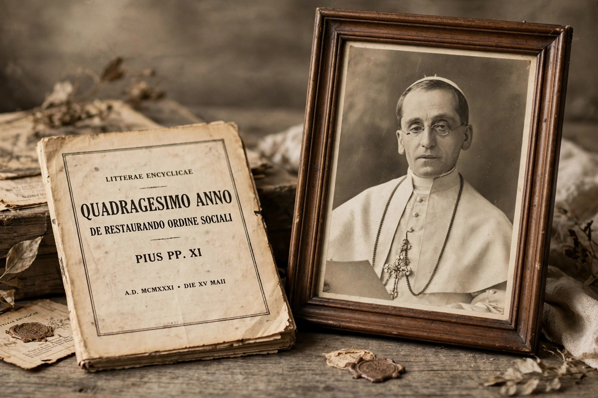

| Type | Papal encyclical |
|---|---|
| Issued by | Pope Pius XI |
| Date | 15 May 1931 |
| Title meaning | "In the Fortieth Year" (after Rerum novarum, 1891) |
| Subject | Reconstruction of the social order; capital and labour |
| Key concepts | Subsidiarity, just wage, condemnation of both unfettered capitalism and communism |

Quadragesimo anno (Latin: "In the Fortieth Year") is an encyclical issued by Pope Pius XI on 15 May 1931, forty years after Pope Leo XIII's landmark Rerum novarum (1891). Subtitled "On Reconstruction of the Social Order", it develops Catholic social teaching in the context of the Great Depression, industrial capitalism and the rise of socialism and communism. The German Jesuit Oswald von Nell-Breuning was its principal drafter.
The encyclical defends private property as a natural right while insisting on its social obligations; it argues that wages must be just — sufficient to support a worker and family — and that both unrestrained free-market capitalism ("economic dictatorship" by concentrated finance) and communism are to be rejected. It criticises class struggle and proposes instead cooperation among vocational groups or estates representing employers and workers, an idea sometimes associated with corporatism.
The document's most enduring contribution is its classic statement of the principle of subsidiarity: it is "an injustice and at the same time a grave evil and disturbance of right order to assign to a greater and higher association what lesser and subordinate organizations can do." The principle later influenced Catholic social doctrine and the constitutional law of the European Union.
Together with Rerum novarum and later encyclicals such as John XXIII's Mater et magistra (1961) and John Paul II's Centesimus annus (1991), Quadragesimo anno forms a central strand of modern Catholic social teaching.